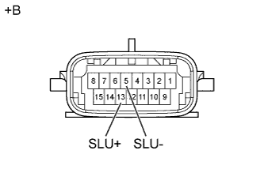
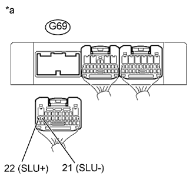

DTC P2759 Электрические цепи управления электромагнитного клапана регулирования давления муфты гидротрансформатора (электромагнитного клапана переключения передач SLU) |
| Код DTC | Условие обнаружения DTC | Неисправный участок |
| P2759 | Во время движения в цепи электромагнитного клапана переключения передач SLU в течение не менее 1 с регистрируется обрыв или короткое замыкание (логика диагностирования за 1 поездку). |
|
| 1.ПРОВЕРЬТЕ ЖГУТ ЭЛЕКТРОПРОВОДКИ ТРАНСМИССИИ (ЭЛЕКТРОМАГНИТНЫЙ КЛАПАН ПЕРЕКЛЮЧЕНИЯ ПЕРЕДАЧ SLU) |
|  |
Отсоедините разъем C30 жгута электропроводки трансмиссии.
Измерьте сопротивление в соответствии со значениями, приведенными в таблице ниже.
| Контакты для подключения диагностического прибора | Условие | Заданные условия |
| 13 (SLU+) - 5 (SLU-) | 20°C (68°F) | 5,0-5,6 Ом |
| 13 (SLU+) - масса | Всегда | 10 кОм или более |
| 5 (SLU-) - масса | Всегда | 10 кОм или более |
| *a | Устройство с неподсоединенным жгутом проводов (жгут электропроводки трансмиссии) |
|
| ||||
| OK | |
| 2.ПРОВЕРЬТЕ ЖГУТ ПРОВОДОВ И РАЗЪЕМ (ЖГУТ ЭЛЕКТРОПРОВОДКИ ТРАНСМИССИИ – TCM) |
|  |
Отсоедините разъем G69 TCM.
Измерьте сопротивление в соответствии со значениями, приведенными в таблице ниже.
| Контакты для подключения диагностического прибора | Условие | Заданные условия |
| G69-22 (SLU+) - G69-21 (SLU-) | 20°C (68°F) | 5,0-5,6 Ом |
| G69-22 (SLU+) - масса | Всегда | 10 кОм или более |
| G69-21 (SLU-) - масса | Всегда | 10 кОм или более |
| *a | Вид сзади разъема со стороны жгута проводов (к TCM) |
|
| ||||
| OK | ||
| ||
| 3.ПРОВЕРЬТЕ ЭЛЕКТРОМАГНИТНЫЙ КЛАПАН ПЕРЕКЛЮЧЕНИЯ ПЕРЕДАЧ SLU |
 |
Снимите электромагнитный клапан переключения передач SLU.
Измерьте сопротивление в соответствии со значениями, приведенными в таблице ниже.
| Контакты для подключения диагностического прибора | Условие | Заданные условия |
| 1 - 2 | 20°C (68°F) | 5,0-5,6 Ом |
Подайте в электромагнитный клапан переключения передач напряжение аккумуляторной батареи 12 В и убедитесь в том, что клапан приводится в движение, издавая характерный для этого звук.
| Условия измерений | Заданные условия |
| Клапан приводится в движение, издавая характерный звук. |
| *a | Устройство с неподсоединенным жгутом проводов (электромагнитный клапан переключения передач SLU) |
|
| ||||
| OK | ||
| ||